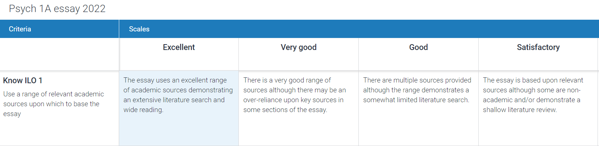

Using ChatGPT to create teaching materials: marking criteria & rubrics
This is the second in a series of blog posts discussing how I’m using ChatGPT to create teaching materials (see here for part 1 on using it for data simulation and creating MCQs). For technical context, I have primarily been using GPT4 through a paid subscription to ChatGPT but I also occasionally use Bing Chat on Creative mode (which uses GPT4 under the hood I believe).
For pedagogical context, I am course lead for a large (700 students) first year introductory psychology course. The main substantive piece of coursework students complete in the first semester is a 1500 word essay taking a critical approach to the history of psychology (the questions are focused on things like eugenics, the replication crisis, the pathologisation of LGBTQ people etc., I’ve written about the essay here).
For marking and feedback, we use Turnitin Feedback Studio. Students receive on-script comments, a general feedback comment, and then a rubric with a rating on six criteria from Excellent (A grade) to Very Poor (G). Our full marking scheme is on a 22-point scale. The rubric doesn’t calculate a score, but the grade and the rubric should align and the marker uses the rubric to help decide the grade, i.e., if the rubric is majority Very Goods, they should be getting some sort of B.

Importantly, the rubric contains descriptions of what each level of attainment should look like. Part of the reason we include a rubric is to provide students with clear assessment criteria before submission, and clear feedback after, but part of the reason is also to help maintain consistency between markers. With 700 students, we have 10-11 markers on the team and using rubrics really helps with alignment. We also use a shared QuickMark comment bank and have multiple marking alignment meetings although that’s not relevant to the current blog.

But, writing good rubric descriptors is HARD. Getting the balance between the descriptors being specific enough to be useful to students but leaving a little room for pragmatism for markers is incredibly difficult. For example, one year, one of the rubric descriptors allowed no errors in spelling, punctuation or grammar. This seems like an entirely sensible thing to expect of an excellent essay for the writing communication criteria but if you follow it exactly (which is what you want your markers to be able to do for consistency), you end up marking down the best essay you’d ever read if it had a single typo or missing comma, which is stupid. Additionally, I particularly struggle writing the descriptions at the lower end of the criteria (is it just me?) - how do you usefully distinguish “Poor” from “Very poor”? It’s part of our marking scheme so we can and we must but putting it into words takes some effort.
Marking criteria
So, enter ChatGPT. The first thing I did was to see if it could improve the six marking criteria we use. Throughout all assessments on our programme, we group assessment criteria into knowledge & research, evaluation & analysis, and communication so I knew that I needed to keep this grouping.
My first prompt was:
Act as an expert psychology lecturer. Write marking criteria that could be used to assess the below essay questions. There should be six criteria, two about knowledge and research, two about analysis and evaluation and use of evidence, and two about academic communication. Present these in a table. [followed by essay questions]
For comparison, I present the marking criteria ChatGPT created with this relatively simple prompt, and the criteria that we used in 2022, the ones I wrote myself with my muggle brain.
Well bugger me.
| Type | ChatGPT | Original criteria |
|---|---|---|
| Knowledge and Research | Understanding of the topic, including relevant theories, concepts, historical context, and methodological approaches. This should be demonstrated by a comprehensive discussion of key ideas, appropriate use of terminology, and an accurate representation of relevant research findings and studies. | Describe relevant evidence in an appropriate level of depth and breadth to demonstrate a comprehensive understanding of the topic. |
| Knowledge and Research | Quality and breadth of research sources, including primary research articles, review articles, and/or reputable secondary sources. The essay should demonstrate a comprehensive understanding of the field by referring to a diverse range of sources, and these sources should be current and relevant to the topic. | Use a range of relevant academic sources upon which to base the essay |
| Analysis and Evaluation/Use of Evidence | Capacity to critically evaluate and analyze the evidence, considering strengths, limitations, implications, and alternative viewpoints. The essay should demonstrate an ability to think independently, and to connect and contrast different pieces of evidence in a thoughtful and meaningful way. | Provide analysis, interpretation, and evaluation of the evidence presented to answer the specific question asked. |
| Analysis and Evaluation/Use of Evidence | Use of empirical evidence to support arguments. Each argument should be substantiated by empirical findings from relevant research, with appropriate citation. The essay should integrate evidence in a way that supports and enhances the overall argument, rather than simply describing individual studies. | Use academic evidence to support your analysis, interpretation, and evaluation |
| Academic communication | Clarity and organization of the essay. The essay should have a clear structure (introduction, body, conclusion), with coherent and logically-structured paragraphs. The flow of argument should be easy to follow, and transitions between points and sections should be smooth. | Ensure that the essay has a logical structure and that the paragraphs flow together to form a coherent narrative. |
| Academic communication | Quality of writing, including grammar, punctuation, and referencing. The essay should be well-written, with clear and concise language. It should be free of spelling and grammatical errors, and it should adhere to the appropriate academic referencing style (e.g., APA, MLA). | Write clearly and succinctly with appropriate use of spelling, grammar, and APA referencing. |
To make myself feel better I must highlight that the fuller criteria ChatGPT has produced essentially include the “Excellent” descriptor from the rubric, whereas mine are just the headline criteria. But wow, that’s pretty close.
Rubrics
I then followed this up with a request for the rubric descriptors:
Now write me rubric descriptions for each of these criteria. There should be a description for excellent, very good, good, satisfactory, weak, poor and very poor. Present these in a table.
Me and my expertise are going to the pub.
| Criteria | Excellent | Very Good | Good | Satisfactory | Weak | Poor | Very Poor |
|---|---|---|---|---|---|---|---|
| Knowledge and Research | |||||||
| Understanding of the topic | Demonstrates superior comprehension of the topic, employing advanced theories and concepts. Uses precise and appropriate terminology, and accurately represents diverse and complex research findings. | Displays a strong understanding of the topic, including relevant theories and concepts. Utilizes terminology correctly, and mostly accurately represents research findings. | Shows a good understanding of the topic, with minor inaccuracies or omissions in the use of theories, concepts, terminology, or research findings. | Demonstrates a basic understanding of the topic, with some inaccuracies or omissions in the use of theories, concepts, terminology, or research findings. | Exhibits an incomplete understanding of the topic, with significant inaccuracies or omissions in the use of theories, concepts, terminology, or research findings. | Lacks an adequate understanding of the topic, with numerous inaccuracies or omissions in the use of theories, concepts, terminology, or research findings. | Demonstrates little to no understanding of the topic, with severe inaccuracies or omissions in the use of theories, concepts, terminology, or research findings. |
| Quality and breadth of research sources | Extensively uses a wide range of high-quality, current, and relevant sources. Demonstrates a superior understanding of the field. | Uses a good range of high-quality, current, and relevant sources. Demonstrates a strong understanding of the field. | Uses a reasonable range of high-quality sources, but may lack some currency or relevance. Demonstrates a good understanding of the field. | Uses a limited range of sources, which may lack quality, currency, or relevance. Demonstrates a satisfactory understanding of the field. | Uses a small range of sources, which lack quality, currency, or relevance. Demonstrates a weak understanding of the field. | Uses very few sources, which lack quality, currency, or relevance. Demonstrates a poor understanding of the field. | Uses almost no sources, or uses sources that are largely irrelevant, outdated, or of low quality. Demonstrates a very poor understanding of the field. |
| Analysis and Evaluation/Use of Evidence | |||||||
| Capacity to critically evaluate and analyze | Demonstrates superior critical thinking skills, with thoughtful and innovative analysis of strengths, limitations, implications, and alternative viewpoints. Connects and contrasts evidence in a deeply insightful way. | Displays strong critical thinking skills, with a well-developed analysis of strengths, limitations, implications, and alternative viewpoints. Connects and contrasts evidence in a insightful way. | Shows good critical thinking skills, with a reasonably well-developed analysis of strengths, limitations, implications, and alternative viewpoints. Connects and contrasts evidence in a somewhat insightful way. | Demonstrates satisfactory critical thinking skills, but the analysis of strengths, limitations, implications, and alternative viewpoints may be shallow or undeveloped. Connects and contrasts evidence in a basic way. | Exhibits weak critical thinking skills, with a poorly developed or inaccurate analysis of strengths, limitations, implications, and alternative viewpoints. Struggles to connect and contrast evidence in a meaningful way. | Lacks critical thinking skills, with an undeveloped or largely inaccurate analysis of strengths, limitations, implications, and alternative viewpoints. Fails to connect or contrast evidence in a meaningful way. | Demonstrates little to no critical thinking skills, with an absent or completely inaccurate analysis of strengths, limitations, implications, and alternative viewpoints. Makes no attempt to connect or contrast evidence. |
| Use of empirical evidence to support arguments | Employs a diverse range of highly relevant empirical findings to support arguments. Integrates evidence in a sophisticated and nuanced manner that greatly enhances the argument. | Uses a good range of relevant empirical findings to support arguments. Integrates evidence in a thoughtful manner that enhances the argument. | Uses a reasonable range of empirical findings to support arguments, but integration of evidence may be somewhat superficial or inconsistent. | Uses a limited range of empirical findings to support arguments, and integration of evidence may be shallow or inconsistent. | Uses few empirical findings to support arguments, and integration of evidence is poor or inconsistent. | Uses almost no empirical findings to support arguments, and makes little to no attempt to integrate evidence. | Fails to use empirical findings to support arguments, and makes no attempt to integrate evidence. |
| Academic Communication | |||||||
| Clarity and organization of the essay | Essay is extremely well organized and clear. Arguments flow seamlessly from one point to the next, with excellent transitions. | Essay is well organized and clear. Arguments flow smoothly from one point to the next, with very good transitions. | Essay is generally well organized and clear, with good flow and transitions, but may have minor inconsistencies. | Essay is somewhat organized and clear, but the flow and transitions may be choppy or inconsistent. | Essay is poorly organized and lacks clarity, with significant problems with flow and transitions. | Essay is very poorly organized and lacks clarity, with severe problems with flow and transitions. | Essay is completely disorganized and lacks any clarity, with no discernible flow or transitions. |
| Quality of writing | Writing is flawless, with perfect grammar, punctuation, and referencing. | Writing is very good, with minor errors in grammar, punctuation, or referencing. | Writing is good, with some errors in grammar, punctuation, or referencing. | Writing is satisfactory, but contains several errors in grammar, punctuation, or referencing. | Writing is weak, with numerous errors in grammar, punctuation, or referencing. | Writing is poor, with severe errors in grammar, punctuation, or referencing. | Writing is very poor, with pervasive errors in grammar, punctuation, or referencing. |
Evaluation, limitations, and considerations
Ok, with less melodrama, let’s be critical about what it’s produced. It’s definitely not perfect and could not be used out the box without an editor with expertise. Its first attempt has recreated the issue I had previously of requiring perfection for an “Excellent” rating on “Quality of writing”. Again, you’d think it’s a sensible thing to suggest but such is the value of experience. There’s also a bit of an issue specific to our essay questions in that because they cover the history of psychology, the sources necessarily will not all be current. Another sensible suggestion but this needs edited to stop it causing confusion and anxiety.
I could edit these manually or I could try to use ChatGPT to shape its responses further:
Rewrite quality of writing but don’t specify an exact number of errors that are allowed
| Criteria | Excellent | Very Good | Good | Satisfactory | Weak | Poor | Very Poor |
|---|---|---|---|---|---|---|---|
| Quality of Writing | Writing is pristine and polished, displaying exceptional use of grammar, punctuation, and adherence to the referencing style. | Writing is of a high standard with minimal and insignificant errors in grammar, punctuation, or referencing. | Writing is of a good standard with some noticeable, yet not severe, errors in grammar, punctuation, or referencing. | Writing is satisfactory but displays consistent errors in grammar, punctuation, or referencing that somewhat distract from the clarity of the content. | Writing quality is substandard with a number of distracting errors in grammar, punctuation, or referencing that affect readability. | Writing is poor with numerous errors in grammar, punctuation, and referencing which severely impact readability. | Writing is riddled with pervasive errors in grammar, punctuation, or referencing, making it nearly unreadable. |
That’s better. Let’s try fixing the other issue:
Rewrite “Quality and breadth of research sources” to allow historical sources as well as current sources, as relevant to the essay question.
| Criteria | Excellent | Very Good | Good | Satisfactory | Weak | Poor | Very Poor |
|---|---|---|---|---|---|---|---|
| Quality and Breadth of Research Sources | Utilizes a diverse range of high-quality, relevant sources, both historical and current, providing an outstanding depth and breadth of understanding of the field. | Employs a broad range of quality, relevant sources, both historical and current, contributing to a strong understanding of the field. | Engages with a variety of relevant sources, both historical and current, contributing to a solid understanding of the field, but may lack some depth or breadth. | Uses a limited range of sources, both historical and current, contributing to a satisfactory understanding of the field, though these sources may lack depth or breadth. | Employs a narrow range of sources that lack quality or relevance, or are not adequately balanced between historical and current, leading to a limited understanding of the field. | Relies on a very limited range of sources, with many lacking in quality or relevance, or an imbalance between historical and current sources, leading to a poor understanding of the field. | Demonstrates little to no engagement with relevant sources, or relies heavily on sources that are irrelevant, of low quality, or unbalanced in terms of historical and current perspectives, leading to a very poor understanding of the field. |
It’s better but I still don’t like it as the balance of historical and current sources that’s right will depend on the essay question they answer. It feels unlikely I’ll get it to get this one right and will edit it myself.
But, as a base from which to start editing this is incredibly helpful. There’s loads of rubric examples out there but the beauty of using ChatGPT is that I’ve been able to shape these examples to make the starting point more relevant to me by giving it the essay questions, the number of criteria I want, and the categories to group them into.
As with my attempts to use it for data simulation and writing MCQs, I’ve simplified the process I underwent here. I used the regenerate option quite a few times and some of them were better than others. The final rubric I use next year is going to be a combination of bits of the old rubric I wrote myself that were working well, along with some edited adaptions from several versions ChatGPT produced, and I’m also going to ask the teaching team to review it before we release it to students.
Which brings me to the point I made in my first blog post about using ChatGPT for teaching which is that I simply don’t see how any of this would be possible or useful without prior expertise and experience.
I’m really glad that I’ve started using it for my own work because it’s given me an insight into how students might use it for assessments and the potential repercussions. Very quickly my focus has changed from “how do we stop them from using it?” or “how do we spot if they’re using it?” to “how do we make sure they first get the prior knowledge and experience they need to use it effectively?”. And not just students, everyone, everywhere, working on any task. In some ways I feel incredibly lucky that this has appeared at this point in my career when have built up the expertise and experience to use it to facilitate my work, whilst being knowledgeable enough to know when not to follow it and to ensure my work never loses my voice and my steer.
Without that prior knowledge and experience guiding me, my overwhelming sense is that everything it produces would look great on the surface but would just be a little bit shit once you started looking at it properly.
How do we convince people of this when they have access to these tools at the start of their journey? No, really, I’m asking, because I don’t think I (or anyone else) know the answer yet.